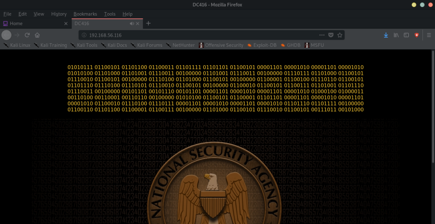
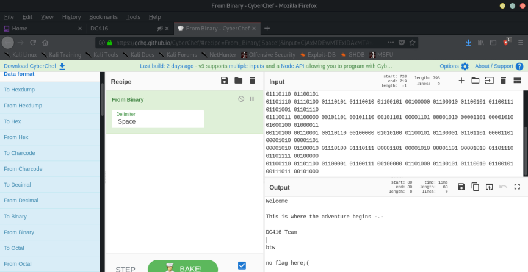
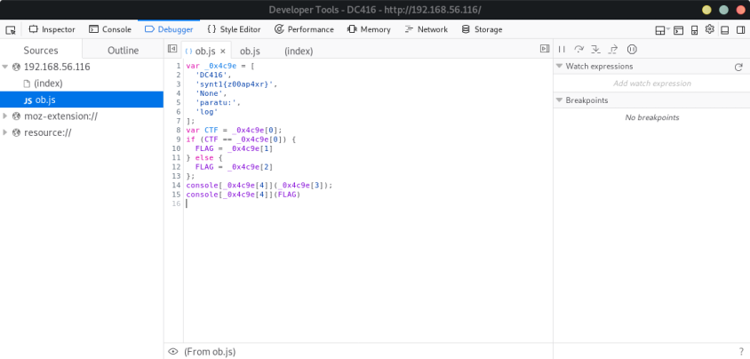
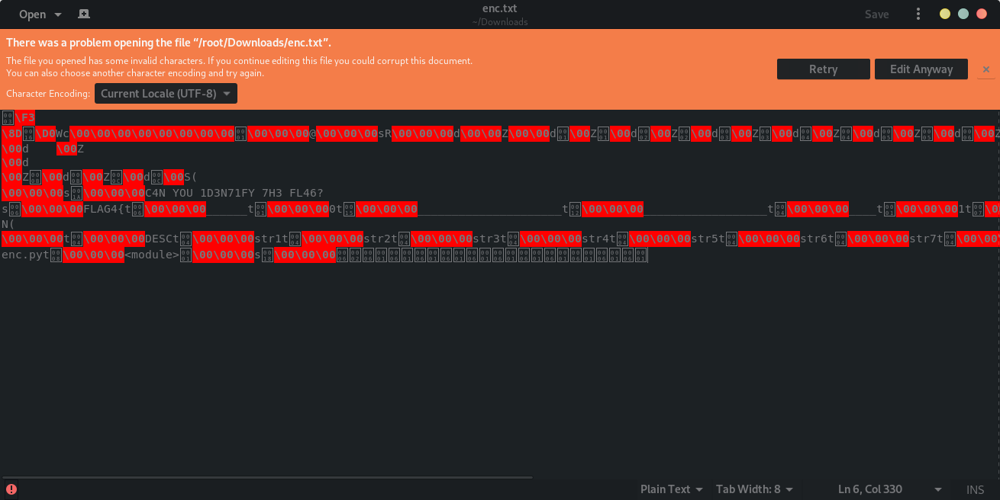

Index
- BasicPenTestingBox
- BasicPenTestingBox2
- bee box
- BossPlayer
- CyberChallenge19
- Dawn
- DC-1
- DC-2
- DC-3
- DerpNStik
- EVM
- Fowsniff
- Gemini Inc 1
- JIS_CTF
- mullidae
- PumpkinFestival
- PumpkinGarden
- PumpkinRaising
- QuaoarCTFHackfest2016
- Rickdiculously Easy
- silky02
- silky1
- Typhoon
- VMS to try
- xss challenges
- Blue
- mr robot
- Unfinished VMS
- CasinoRoyale
- WinterMute Straylight
- connect the dots (unfinished)
- arsenal
- heist
- MyHouse Box
- Sputnik
- Node
- HackInOs
- Seattle
- DC416-Galahad
- Not a Box
- ICE
DC416-Galahad
DC416-Galahad
Nmap scan report for 192.168.56.116
Host is up (0.00032s latency).
Not shown: 997 filtered ports
PORT STATE SERVICE
22/tcp open ssh
80/tcp open http
50000/tcp open ibm-db2
MAC Address: 08:00:27:F1:F1:6C (Oracle VirtualBox virtual NIC)
root@kali:~# nmap -A -p- 192.168.56.116
Starting Nmap 7.80 ( https://nmap.org ) at 2019-11-10 18:23 EST
Nmap scan report for 192.168.56.116
Host is up (0.00038s latency).
Not shown: 65532 filtered ports
PORT STATE SERVICE VERSION
22/tcp open ssh OpenSSH 5.3 (protocol 2.0)
| ssh-hostkey:
| 1024 d9:64:ce:0f:3a:ed:9b:1b:c6:e2:91:85:4e:84:8c:c8 (DSA)
|_ 2048 66:95:e5:42:59:d5:88:57:85:0b:c5:f4:08:0d:2b:0d (RSA)
80/tcp open http Apache httpd 2.2.15 ((CentOS))
| http-methods:
|_ Potentially risky methods: TRACE
| http-robots.txt: 1 disallowed entry
|_/staff
|_http-server-header: Apache/2.2.15 (CentOS)
|_http-title: DC416
50000/tcp open ibm-db2?
| fingerprint-strings:
| GetRequest, ibm-db2-das:
| NNNNNNNN NNNNNNNN SSSSSSSSSSSSSSS AAA
| N:::::::N N::::::N SS:::::::::::::::S N:::A
| S::::::::N E::::::NC:::::SUSRSI::::::S T:::::Y
| N:::::::::N N::::::NS:::::S SSSSSSS A:::::::A
| N::::::::::N N::::::NS:::::S A:::::::::A
| N:::::::::::N N::::::NS:::::S A:::::A:::::A
| T:::::::H::::N R::::::O U::::SSSS G:::::A H:::::A
| N::::::N N::::N N::::::N SS::::::SSSSS A:::::A A:::::A
| N::::::N N::::N:::::::N SSS::::::::SS A:::::A A:::::A
| N::::::N N:::::::::::N SSOBSC::::S A:::::AARAIAATY:::::A
| 3::::::N 4::::::::::N 3:::::S 4:::::::::::::::::::::A
| N::::::N N:::::::::N S:::::S A:::::AAAAAAAAAAAAA:::::A
| 3::::::N 4::::::::NS3SSSS4 S:::::S 0:::::d 0:::::a
|_ N::::::N N:::::::NS::::::SUDPSS::::
1 service unrecognized despite returning data. If you know the service/version, please submit the following fingerprint at https://nmap.org/cgi-bin/submit.cgi?new-service :
SF-Port50000-TCP:V=7.80%I=7%D=11/10%Time=5DC89C77%P=x86_64-pc-linux-gnu%r(
SF:GetRequest,456,"\nNNNNNNNN\x20\x20\x20\x20\x20\x20\x20\x20NNNNNNNN\x20\
SF:x20\x20SSSSSSSSSSSSSSS\x20\x20\x20\x20\x20\x20\x20\x20\x20\x20\x20\x20\
SF:x20\x20AAA\nN:::::::N\x20\x20\x20\x20\x20\x20\x20N::::::N\x20SS::::::::
SF::::::::S\x20\x20\x20\x20\x20\x20\x20\x20\x20\x20\x20\x20N:::A\nS:::::::
SF::N\x20\x20\x20\x20\x20\x20E::::::NC:::::SUSRSI::::::S\x20\x20\x20\x20\x
SF:20\x20\x20\x20\x20\x20\x20T:::::Y\nN:::::::::N\x20\x20\x20\x20\x20N::::
SF:::NS:::::S\x20\x20\x20\x20\x20SSSSSSS\x20\x20\x20\x20\x20\x20\x20\x20\x
SF:20\x20A:::::::A\nN::::::::::N\x20\x20\x20\x20N::::::NS:::::S\x20\x20\x2
SF:0\x20\x20\x20\x20\x20\x20\x20\x20\x20\x20\x20\x20\x20\x20\x20\x20\x20\x
SF:20A:::::::::A\nN:::::::::::N\x20\x20\x20N::::::NS:::::S\x20\x20\x20\x20
SF:\x20\x20\x20\x20\x20\x20\x20\x20\x20\x20\x20\x20\x20\x20\x20\x20A:::::A
SF::::::A\nT:::::::H::::N\x20\x20R::::::O\x20U::::SSSS\x20\x20\x20\x20\x20
SF:\x20\x20\x20\x20\x20\x20\x20\x20\x20\x20\x20G:::::A\x20H:::::A\nN::::::
SF:N\x20N::::N\x20N::::::N\x20\x20SS::::::SSSSS\x20\x20\x20\x20\x20\x20\x2
SF:0\x20\x20\x20A:::::A\x20\x20\x20A:::::A\nN::::::N\x20\x20N::::N:::::::N
SF:\x20\x20\x20\x20SSS::::::::SS\x20\x20\x20\x20\x20\x20\x20A:::::A\x20\x2
SF:0\x20\x20\x20A:::::A\nN::::::N\x20\x20\x20N:::::::::::N\x20\x20\x20\x20
SF:\x20\x20\x20SSOBSC::::S\x20\x20\x20\x20\x20A:::::AARAIAATY:::::A\n3::::
SF:::N\x20\x20\x20\x204::::::::::N\x20\x20\x20\x20\x20\x20\x20\x20\x20\x20
SF:\x20\x203:::::S\x20\x20\x204:::::::::::::::::::::A\nN::::::N\x20\x20\x2
SF:0\x20\x20N:::::::::N\x20\x20\x20\x20\x20\x20\x20\x20\x20\x20\x20\x20S::
SF::::S\x20\x20A:::::AAAAAAAAAAAAA:::::A\n3::::::N\x20\x20\x20\x20\x20\x20
SF:4::::::::NS3SSSS4\x20\x20\x20\x20\x20S:::::S\x200:::::d\x20\x20\x20\x20
SF:\x20\x20\x20\x20\x20\x20\x20\x20\x200:::::a\nN::::::N\x20\x20\x20\x20\x
SF:20\x20\x20N:::::::NS::::::SUDPSS::::")%r(ibm-db2-das,450,"\nNNNNNNNN\x2
SF:0\x20\x20\x20\x20\x20\x20\x20NNNNNNNN\x20\x20\x20SSSSSSSSSSSSSSS\x20\x2
SF:0\x20\x20\x20\x20\x20\x20\x20\x20\x20\x20\x20\x20AAA\nN:::::::N\x20\x20
SF:\x20\x20\x20\x20\x20N::::::N\x20SS:::::::::::::::S\x20\x20\x20\x20\x20\
SF:x20\x20\x20\x20\x20\x20\x20N:::A\nS::::::::N\x20\x20\x20\x20\x20\x20E::
SF:::::NC:::::SUSRSI::::::S\x20\x20\x20\x20\x20\x20\x20\x20\x20\x20\x20T::
SF::::Y\nN:::::::::N\x20\x20\x20\x20\x20N::::::NS:::::S\x20\x20\x20\x20\x2
SF:0SSSSSSS\x20\x20\x20\x20\x20\x20\x20\x20\x20\x20A:::::::A\nN::::::::::N
SF:\x20\x20\x20\x20N::::::NS:::::S\x20\x20\x20\x20\x20\x20\x20\x20\x20\x20
SF:\x20\x20\x20\x20\x20\x20\x20\x20\x20\x20\x20A:::::::::A\nN:::::::::::N\
SF:x20\x20\x20N::::::NS:::::S\x20\x20\x20\x20\x20\x20\x20\x20\x20\x20\x20\
SF:x20\x20\x20\x20\x20\x20\x20\x20\x20A:::::A:::::A\nT:::::::H::::N\x20\x2
SF:0R::::::O\x20U::::SSSS\x20\x20\x20\x20\x20\x20\x20\x20\x20\x20\x20\x20\
SF:x20\x20\x20\x20G:::::A\x20H:::::A\nN::::::N\x20N::::N\x20N::::::N\x20\x
SF:20SS::::::SSSSS\x20\x20\x20\x20\x20\x20\x20\x20\x20\x20A:::::A\x20\x20\
SF:x20A:::::A\nN::::::N\x20\x20N::::N:::::::N\x20\x20\x20\x20SSS::::::::SS
SF:\x20\x20\x20\x20\x20\x20\x20A:::::A\x20\x20\x20\x20\x20A:::::A\nN::::::
SF:N\x20\x20\x20N:::::::::::N\x20\x20\x20\x20\x20\x20\x20SSOBSC::::S\x20\x
SF:20\x20\x20\x20A:::::AARAIAATY:::::A\n3::::::N\x20\x20\x20\x204:::::::::
SF::N\x20\x20\x20\x20\x20\x20\x20\x20\x20\x20\x20\x203:::::S\x20\x20\x204:
SF:::::::::::::::::::::A\nN::::::N\x20\x20\x20\x20\x20N:::::::::N\x20\x20\
SF:x20\x20\x20\x20\x20\x20\x20\x20\x20\x20S:::::S\x20\x20A:::::AAAAAAAAAAA
SF:AA:::::A\n3::::::N\x20\x20\x20\x20\x20\x204::::::::NS3SSSS4\x20\x20\x20
SF:\x20\x20S:::::S\x200:::::d\x20\x20\x20\x20\x20\x20\x20\x20\x20\x20\x20\
SF:x20\x200:::::a\nN::::::N\x20\x20\x20\x20\x20\x20\x20N:::::::NS::::::SUD
SF:PSS::::");
MAC Address: 08:00:27:F1:F1:6C (Oracle VirtualBox virtual NIC)
Warning: OSScan results may be unreliable because we could not find at least 1 open and 1 closed port
Device type: general purpose
Running: Linux 2.6.X|3.X
OS CPE: cpe:/o:linux:linux_kernel:2.6 cpe:/o:linux:linux_kernel:3
OS details: Linux 2.6.32 - 3.10, Linux 2.6.32 - 3.13
Network Distance: 1 hop
TRACEROUTE
HOP RTT ADDRESS
1 0.38 ms 192.168.56.116
OS and Service detection performed. Please report any incorrect results at https://nmap.org/submit/ .
Nmap done: 1 IP address (1 host up) scanned in 157.24 seconds
root@kali:~#
root@kali:~# dirb http://192.168.56.116/ /usr/share/wordlists/dirb/common.txt
-----------------
DIRB v2.22
By The Dark Raver
-----------------
START_TIME: Sun Nov 10 18:31:59 2019
URL_BASE: http://192.168.56.116/
WORDLIST_FILES: /usr/share/wordlists/dirb/common.txt
-----------------
GENERATED WORDS: 4612
---- Scanning URL: http://192.168.56.116/ ----
==> DIRECTORY: http://192.168.56.116/admin/
+ http://192.168.56.116/cgi-bin/ (CODE:403|SIZE:290)
+ http://192.168.56.116/index.html (CODE:200|SIZE:1269)
+ http://192.168.56.116/robots.txt (CODE:200|SIZE:31)
==> DIRECTORY: http://192.168.56.116/staff/
---- Entering directory: http://192.168.56.116/admin/ ----
+ http://192.168.56.116/admin/index.html (CODE:200|SIZE:288)
---- Entering directory: http://192.168.56.116/staff/ ----
+ http://192.168.56.116/staff/index.html (CODE:200|SIZE:256)
-----------------
END_TIME: Sun Nov 10 18:34:36 2019
DOWNLOADED: 13836 - FOUND: 5
root@kali:~#


---> the first flag is encoded in ROT-13
ROT-13 Encrypted: synt1{z00ap4xr}
ROT-13 Decrypted: flag1{m00nc4ke}

FLAG 2:
→ Download the image nsa.jpg
→ In the s.txt file, from base64:
123456123456789passwordadobe12312345678qwertybesinal
b1tch3s
a842000
JOSE
3879
3199737
25
11
11
saoly
rocij
qaz
nan852
mihardcore
chinesa78
anggandako
95
667306
6530708
5184558
333
3197337
1990
0124309682
0123456789
0109381602
000
you805
no
maka
jupanu
ciocolatax
angelica
1990
1111
pepe
markinho
mara
54321
123d
7
1234567
1
.xCvBnM,
.ie168
.abygurl69
.a6_123
.*.7¡Vamos!.
1234567111111photoshop123123passphrase:edward1234567890000000abc1231234adobe1macromediaazerty
passphase: edward
Use that to extract message from image using steghide
root@kali:~/Downloads# cat flag2
flag2{M00nface}
/cgi-bin/vault.py?arg=message
root@kali:~/Downloads#
Try and go to the URL:
FLAG 4:

Use uncompyler to decompile the file:
root@kali:~/Downloads# git clone https://github.com/wibiti/uncompyle2.git
Cloning into 'uncompyle2'...
remote: Enumerating objects: 700, done.
remote: Total 700 (delta 0), reused 0 (delta 0), pack-reused 700
Receiving objects: 100% (700/700), 920.47 KiB | 3.98 MiB/s, done.
Resolving deltas: 100% (381/381), done.
root@kali:~/Downloads# cd uncompyle2/
root@kali:~/Downloads/uncompyle2# ls
compile_tests PKG-INFO scripts setup.py test_one uncompyle2
MANIFEST.in README setup.cfg test test_pythonlib
root@kali:~/Downloads/uncompyle2# python setup.py install
...
root@kali:~/Downloads# uncompyle2 enc.pyc
# 2019.11.10 20:08:36 EST
#Embedded file name: ./enc.py
DESC = 'C4N YOU 1D3N71FY 7H3 FL46?'
str1 = 'FLAG4{'
str2 = '______'
str3 = '0'
str4 = '_____________________'
str5 = '__________________'
str6 = '____'
str7 = '1'
str8 = '_______'
str9 = '1'
str10 = '____________________'
str11 = '__________________________'
str12 = '}'
+++ okay decompyling enc.pyc
# decompiled 1 files: 1 okay, 0 failed, 0 verify failed
# 2019.11.10 20:08:36 EST
root@kali:~/Downloads#
--> number of underscores correspond to a letter of the alphabet:
FLAG4{f0urd1g1tz}FLAG 5:
Port 5000
NNNNNNNN NNNNNNNN SSSSSSSSSSSSSSS AAA
N:::::::N N::::::N SS:::::::::::::::S N:::A
S::::::::N E::::::NC:::::SUSRSI::::::S T:::::Y -→ security
N:::::::::N N::::::NS:::::S SSSSSSS A:::::::A
N::::::::::N N::::::NS:::::S A:::::::::A
N:::::::::::N N::::::NS:::::S A:::::A:::::A
T:::::::H::::N R::::::O U::::SSSS G:::::A H:::::A --> through
N::::::N N::::N N::::::N SS::::::SSSSS A:::::A A:::::A
N::::::N N::::N:::::::N SSS::::::::SS A:::::A A:::::A
N::::::N N:::::::::::N SSOBSC::::S A:::::AARAIAATY:::::A --> obscrity
3::::::N 4::::::::::N 3:::::S 4:::::::::::::::::::::A -> 3434
N::::::N N:::::::::N S:::::S A:::::AAAAAAAAAAAAA:::::A
3::::::N 4::::::::NS3SSSS4 S:::::S 0:::::d 0:::::a → 34340d0a
N::::::N N:::::::NS::::::SUDPSS:::::SA:::::A A:::::A --> UDP
N::::::N N::::::NS:::::::::::::::SSA:::::A A:::::A
NNNNNNNN NNNNNNN SSSSSSSSSSSSSSS AAAAAAA AAAAAAA
31337 7331 31338 8331 ____
root@kali:~/Downloads# nmap -v -sU -p3434 192.168.56.116
Starting Nmap 7.80 ( https://nmap.org ) at 2019-11-10 19:34 EST
Initiating ARP Ping Scan at 19:34
Scanning 192.168.56.116 [1 port]
Completed ARP Ping Scan at 19:34, 0.04s elapsed (1 total hosts)
Initiating Parallel DNS resolution of 1 host. at 19:34
Completed Parallel DNS resolution of 1 host. at 19:34, 0.00s elapsed
Initiating UDP Scan at 19:34
Scanning 192.168.56.116 [1 port]
Completed UDP Scan at 19:34, 0.05s elapsed (1 total ports)
Nmap scan report for 192.168.56.116
Host is up (0.00040s latency).
PORT STATE SERVICE
3434/udp filtered opencm
MAC Address: 08:00:27:F1:F1:6C (Oracle VirtualBox virtual NIC)
Read data files from: /usr/bin/../share/nmap
Nmap done: 1 IP address (1 host up) scanned in 0.23 seconds
Raw packets sent: 2 (56B) | Rcvd: 2 (84B)
root@kali:~/Downloads#
root@kali:~/Downloads# nmap -v -sU -p31337 192.168.56.116
Starting Nmap 7.80 ( https://nmap.org ) at 2019-11-10 19:42 EST
Initiating ARP Ping Scan at 19:42
Scanning 192.168.56.116 [1 port]
Completed ARP Ping Scan at 19:42, 0.04s elapsed (1 total hosts)
Initiating Parallel DNS resolution of 1 host. at 19:42
Completed Parallel DNS resolution of 1 host. at 19:42, 0.00s elapsed
Initiating UDP Scan at 19:42
Scanning 192.168.56.116 [1 port]
Completed UDP Scan at 19:42, 0.04s elapsed (1 total ports)
Nmap scan report for 192.168.56.116
Host is up (0.00035s latency).
PORT STATE SERVICE
31337/udp filtered BackOrifice
MAC Address: 08:00:27:F1:F1:6C (Oracle VirtualBox virtual NIC)
Read data files from: /usr/bin/../share/nmap
Nmap done: 1 IP address (1 host up) scanned in 0.23 seconds
Raw packets sent: 2 (56B) | Rcvd: 2 (84B)
root@kali:~/Downloads#
root@kali:~/Downloads# nmap -v -sU -p7331 192.168.56.116
Starting Nmap 7.80 ( https://nmap.org ) at 2019-11-10 19:43 EST
Initiating ARP Ping Scan at 19:43
Scanning 192.168.56.116 [1 port]
Completed ARP Ping Scan at 19:43, 0.04s elapsed (1 total hosts)
Initiating Parallel DNS resolution of 1 host. at 19:43
Completed Parallel DNS resolution of 1 host. at 19:43, 0.00s elapsed
Initiating UDP Scan at 19:43
Scanning 192.168.56.116 [1 port]
Completed UDP Scan at 19:43, 0.05s elapsed (1 total ports)
Nmap scan report for 192.168.56.116
Host is up (0.00037s latency).
PORT STATE SERVICE
7331/udp filtered swx
MAC Address: 08:00:27:F1:F1:6C (Oracle VirtualBox virtual NIC)
Read data files from: /usr/bin/../share/nmap
Nmap done: 1 IP address (1 host up) scanned in 0.22 seconds
Raw packets sent: 2 (56B) | Rcvd: 2 (84B)
root@kali:~/Downloads#
root@kali:~/Downloads# nmap -v -sU -p31338 192.168.56.116
Starting Nmap 7.80 ( https://nmap.org ) at 2019-11-10 19:43 EST
Initiating ARP Ping Scan at 19:43
Scanning 192.168.56.116 [1 port]
Completed ARP Ping Scan at 19:43, 0.04s elapsed (1 total hosts)
Initiating Parallel DNS resolution of 1 host. at 19:43
Completed Parallel DNS resolution of 1 host. at 19:43, 0.01s elapsed
Initiating UDP Scan at 19:43
Scanning 192.168.56.116 [1 port]
Completed UDP Scan at 19:43, 0.06s elapsed (1 total ports)
Nmap scan report for 192.168.56.116
Host is up (0.00035s latency).
PORT STATE SERVICE
31338/udp filtered unknown
MAC Address: 08:00:27:F1:F1:6C (Oracle VirtualBox virtual NIC)
Read data files from: /usr/bin/../share/nmap
Nmap done: 1 IP address (1 host up) scanned in 0.23 seconds
Raw packets sent: 2 (56B) | Rcvd: 2 (84B)
root@kali:~/Downloads#
root@kali:~/Downloads# nmap -v -sU -p8331 192.168.56.116
Starting Nmap 7.80 ( https://nmap.org ) at 2019-11-10 19:43 EST
Initiating ARP Ping Scan at 19:43
Scanning 192.168.56.116 [1 port]
Completed ARP Ping Scan at 19:43, 0.03s elapsed (1 total hosts)
Initiating Parallel DNS resolution of 1 host. at 19:43
Completed Parallel DNS resolution of 1 host. at 19:43, 0.00s elapsed
Initiating UDP Scan at 19:43
Scanning 192.168.56.116 [1 port]
Completed UDP Scan at 19:43, 0.04s elapsed (1 total ports)
Nmap scan report for 192.168.56.116
Host is up (0.00030s latency).
PORT STATE SERVICE
8331/udp filtered unknown
MAC Address: 08:00:27:F1:F1:6C (Oracle VirtualBox virtual NIC)
Read data files from: /usr/bin/../share/nmap
Nmap done: 1 IP address (1 host up) scanned in 0.21 seconds
Raw packets sent: 2 (56B) | Rcvd: 2 (84B)
root@kali:~/Downloads#
root@kali:~/Downloads# nmap -v -sU -p44 192.168.56.116
Starting Nmap 7.80 ( https://nmap.org ) at 2019-11-10 19:44 EST
Initiating ARP Ping Scan at 19:44
Scanning 192.168.56.116 [1 port]
Completed ARP Ping Scan at 19:44, 0.04s elapsed (1 total hosts)
Initiating Parallel DNS resolution of 1 host. at 19:44
Completed Parallel DNS resolution of 1 host. at 19:44, 0.00s elapsed
Initiating UDP Scan at 19:44
Scanning 192.168.56.116 [1 port]
Completed UDP Scan at 19:44, 0.05s elapsed (1 total ports)
Nmap scan report for 192.168.56.116
Host is up (0.00035s latency).
PORT STATE SERVICE
44/udp filtered mpm-flags
MAC Address: 08:00:27:F1:F1:6C (Oracle VirtualBox virtual NIC)
Read data files from: /usr/bin/../share/nmap
Nmap done: 1 IP address (1 host up) scanned in 0.23 seconds
Raw packets sent: 2 (56B) | Rcvd: 2 (84B)
root@kali:~/Downloads#
root@kali:~/Downloads# nmap -v -sU -p4444 192.168.56.116
Starting Nmap 7.80 ( https://nmap.org ) at 2019-11-10 20:12 EST
Initiating ARP Ping Scan at 20:12
Scanning 192.168.56.116 [1 port]
Completed ARP Ping Scan at 20:12, 0.04s elapsed (1 total hosts)
Initiating Parallel DNS resolution of 1 host. at 20:12
Completed Parallel DNS resolution of 1 host. at 20:12, 0.00s elapsed
Initiating UDP Scan at 20:12
Scanning 192.168.56.116 [1 port]
Completed UDP Scan at 20:12, 0.05s elapsed (1 total ports)
Nmap scan report for 192.168.56.116
Host is up (0.00034s latency).
PORT STATE SERVICE
4444/udp filtered krb524
MAC Address: 08:00:27:F1:F1:6C (Oracle VirtualBox virtual NIC)
Read data files from: /usr/bin/../share/nmap
Nmap done: 1 IP address (1 host up) scanned in 0.22 seconds
Raw packets sent: 2 (56B) | Rcvd: 2 (84B)
root@kali:~/Downloads#
root@kali:~/Downloads# nmap -v -sV -p8331 192.168.56.116
Starting Nmap 7.80 ( https://nmap.org ) at 2019-11-10 20:13 EST
NSE: Loaded 45 scripts for scanning.
Initiating ARP Ping Scan at 20:13
Scanning 192.168.56.116 [1 port]
Completed ARP Ping Scan at 20:13, 0.04s elapsed (1 total hosts)
Initiating Parallel DNS resolution of 1 host. at 20:13
Completed Parallel DNS resolution of 1 host. at 20:13, 0.00s elapsed
Initiating SYN Stealth Scan at 20:13
Scanning 192.168.56.116 [1 port]
Completed SYN Stealth Scan at 20:13, 0.05s elapsed (1 total ports)
Initiating Service scan at 20:13
NSE: Script scanning 192.168.56.116.
Initiating NSE at 20:13
Completed NSE at 20:13, 0.00s elapsed
Initiating NSE at 20:13
Completed NSE at 20:13, 0.00s elapsed
Nmap scan report for 192.168.56.116
Host is up (0.00034s latency).
PORT STATE SERVICE VERSION
8331/tcp filtered unknown
MAC Address: 08:00:27:F1:F1:6C (Oracle VirtualBox virtual NIC)
Read data files from: /usr/bin/../share/nmap
Service detection performed. Please report any incorrect results at https://nmap.org/submit/ .
Nmap done: 1 IP address (1 host up) scanned in 0.53 seconds
Raw packets sent: 2 (72B) | Rcvd: 2 (100B)
root@kali:~/Downloads# nmap -v -sV -p31337 192.168.56.116
Starting Nmap 7.80 ( https://nmap.org ) at 2019-11-10 20:13 EST
NSE: Loaded 45 scripts for scanning.
Initiating ARP Ping Scan at 20:13
Scanning 192.168.56.116 [1 port]
Completed ARP Ping Scan at 20:13, 0.05s elapsed (1 total hosts)
Initiating Parallel DNS resolution of 1 host. at 20:13
Completed Parallel DNS resolution of 1 host. at 20:13, 0.00s elapsed
Initiating SYN Stealth Scan at 20:13
Scanning 192.168.56.116 [1 port]
Completed SYN Stealth Scan at 20:13, 0.04s elapsed (1 total ports)
Initiating Service scan at 20:13
NSE: Script scanning 192.168.56.116.
Initiating NSE at 20:13
Completed NSE at 20:13, 0.00s elapsed
Initiating NSE at 20:13
Completed NSE at 20:13, 0.00s elapsed
Nmap scan report for 192.168.56.116
Host is up (0.00033s latency).
PORT STATE SERVICE VERSION
31337/tcp filtered Elite
MAC Address: 08:00:27:F1:F1:6C (Oracle VirtualBox virtual NIC)
Read data files from: /usr/bin/../share/nmap
Service detection performed. Please report any incorrect results at https://nmap.org/submit/ .
Nmap done: 1 IP address (1 host up) scanned in 0.54 seconds
Raw packets sent: 2 (72B) | Rcvd: 2 (100B)
root@kali:~/Downloads#